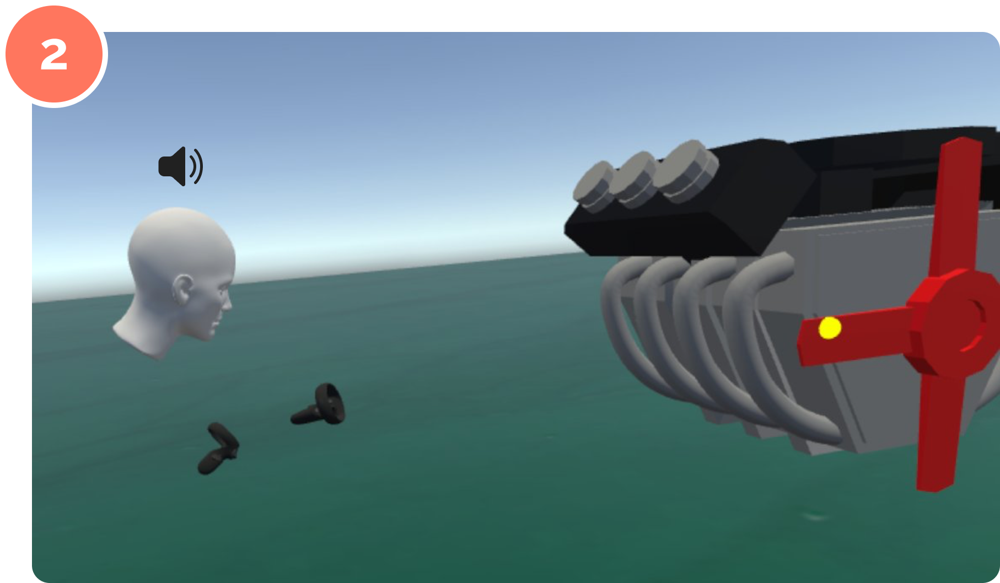

Designing an annotation system for virtual reality
How Might We
Create an annotation system in virtual reality that preserves user perspective in a 3D environment
Abstract
Virtual reality (VR) has emerged as a new technology in the commercial and research space, and many people now utilize
VR in their workflows. To improve user productivity in these workflows, annotation systems in VR allow users to capture
insights and observations while in VR sessions. In the digital, 3D world of VR, we can design annotation systems that provide
a richer and more contextual annotation viewing experience. We propose VR-Notes, a design for a new annotation system
in VR that focuses on capturing the annotator's perspective for both "doodle" annotations and audio annotations, as well as
improving the accessibility of the annotator’s experience in terms of physical movement. Results from our user study show
that the VR-Notes doodle method requires 54%, 46%, 58% less movement and 34%, 39%, 50% less rotation (head, left
controller, and right controller respectively) on average when compared to a popular VR freehand drawing method.
MY ROLE
I worked independently on VR-Notes for my Computer Science Senior Thesis project, responsible for all parts of the project including design, development, experiment, analysis,
and writing the paper. VR-Notes was a year-long project that was advised by Xing-Dong Yang (Assistant Professor at Dartmouth College), who I am incredibly grateful for supporting me.
INSPIRATION
As a junior planning for my senior thesis the following year, I was interested in how virtual reality could be used in courses at Dartmouth. I met with two Dartmouth professors who were already experimenting with VR:
Nicola CamerlenghiArt History
Jonathan ChipmanEarth Sciences and Geography
Professor Camerlenghi imagined a VR experience where students could go virtual tours of early medieval churches and buildings, many of which have now been burned down or destroyed.
Virtual reconstruction of the Basilica of Saint Paul Outside the Walls, which burned down in 1823
Athabasca Glacier in Canada’s Jasper National Park (red color indicates green vegetation)
Professor Chipman aimed to use VR as a way for physically disabled students to conduct fieldwork “virtually,” as well as a way to conduct fieldwork in inaccessible or environmentally fragile areas.
Both professors needed an annotation system in VR that allowed users to take and review notes, as well as collaboratively share notes with others.
IDEATION
From my conversations with the professors, there were two annotations that I wanted to explore in my research.
In designing an annotaiton in VR, I defined three specifications to help shape my design prcoess:
Context-preserving
Keeps context of where and how an annotation was created
Consistent
Viewing experience is consistent across different physical locations
Physically accessible
Minimize movement required to create annotations
From these principles and inspired by the professors' needs, I brainstormed several different ways that we can build richer and context-preserving annotations in VR by leveraging positioning data
from the headset and controllers.
DESIGN
Creating Annotations
The annotator selects a point of interest in the 3D world.
The annotator selects an annotation type from a menu.
For a doodle annotation, a clear 2D plane appears between the annotator and the point of interest. The creator can draw on the plane
and save the screenshot.
For a audio annotation, the annotator can start a recording which will record from the microphone on the headset.
The system will also record movement and rotation of the headset and two controllers of the annotator, as well as the laser pointer feature.
The annotator then ends the recording when they are done.
Viewing Annotations
When the viewer selects a doodle annotation, the 2D pane screenshot appears above
the viewer's other controller. See the original annotation for reference.

When the viewer selects an audio annotation, the audio recordings begins to play.
An animated avatar also appears, mirroring the movement of the annotator during the recording.
Additional controls. (A) Teleport to the original position of the annotator. (B) Playback for audio annotations. (C) Close out of annotation viewing experience. (D) Delete an annotation.
Viewers can also bring up a library of all of the annotations in a world, quickly finding one to view.
IMPLEMENTATION
The prototype of VR-Notes was built using the following:
EXPERIMENT
We measured the effectiveness of the VR-Notes Doodle method by comparing it to a
freehand drawing method that was commonly used in VR drawing apps like Tiltbrush.
VR-Notes Doodle Method
Freehand drawing method
We had 12 participants circle a highlighted object or group of objects using both methods,
and tracked controller/headset movement and rotation, as well as accuracy of the annotation.
From the experiment, we found VR-Notes “doodle” method performed better in the following areas
Movement: participants moved the headset and controllers less when annotating using the VR-Notes method.
Rotation: participants rotated the headset and controllers less when annotating using the VR-Notes method.
Accuracy: participants were more accurate in centering the circle around the target object(s).
Users also rated the VR-Notes Doodle method higher in ease of use, perceived accuracy, and enjoyment.
CONCLUSION
For the project, I also created two demos based on my inspiration for the project. I incorporated the VR-Notes system
into the virtual church environment, as well as a virtual Grand Canyon model.
VR-Notes won multiple research awards at Dartmouth, and I was awarded High Honors for my computer science degree after completing my thesis. üéâ